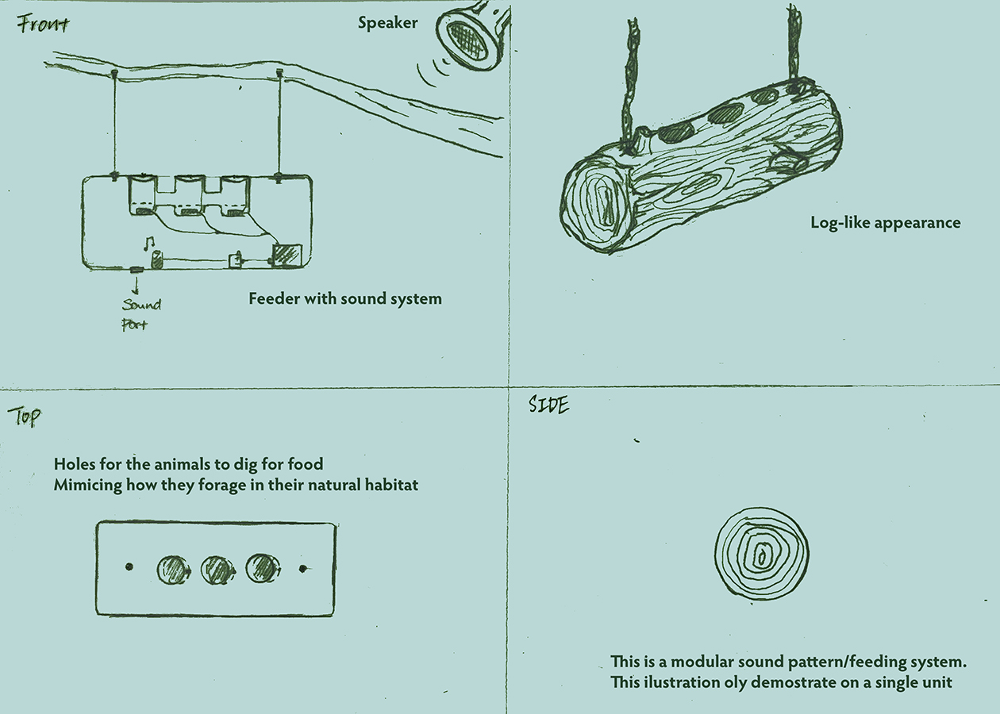

Week 9
Midterm Final: Enrichment System for Contton-Top Tamarins

For our midterm proposal we want to focus on the enrichment of the cotton-top tamarin. These lovely creatures are found in tropical forest edges and secondary forests in northwestern Colombia. They are small New World Monkey that weigh less than 0.5kg. The Cotton-Top Tamarin are currently classified as "critically endangered" by the IUCN. According to Wikipedia, up to 40,000 cotton-top tamarins are thought to have been caught and exported for use in biomedical research before 1976, when CITES gave them the highest level of protection and all international trade was banned. Now, the species is at risk due to large-scale habitat destruction, as the lowland forest in northwestern Colombia where the cotton-top tamarin is found has been reduced to 5% of its previous area.
[Click Here to View Full Research Paper]
Background & Reaserch
On Food and Activities
From our initial observation at the Central Park Zoo, we noticed that the Cotton-Top Tamarins Spend a lot of time just to hopping around, digging and scratching. Through further research we found that they spend most of their time on finding food sources. Mostly by stealth, turning over leaves, exploring crevices, or pouncing. However, since they are currently critically endangered, it is most likey they will be in captivity such as zoos. Nonetheless, in a zoo setting, from our previous and limited observation, they do not seem to have the oppertunity to go around foraging and digging for food but being fed. Their diet includes mostly friuts and insects. Occationally they would also consume reptiles. It is crucial for them to have a high-quality, high-energy diet because of their smallbody size, gut volume, and rapid rate of food passage.
[Click Here to View Full Research Paper] [Click Here to View Full Research Paper] [Click Here to View Full Research Paper]
On Language and Sound
From futher reaserch on the Cotton Top Tamarins, we learned that they are highly intelligent and have very constructive communication skills. They are very senstive two sounds and can make 38 different types of calls to express and communicate with each other. In addition, they are also able to process natural language logic and have strong patter recognition skills. On one specific experiment, the tamarins are put into a series of controlled tests to see their ability to process synthetic predictive language (languages with logic and patterns that presented in natural languages). The studies shoed that they are as capable as learning and processing logic as human babies. Furthermore, in addition to their own abilities to make different types of calls by combining various types of sounds based on duration and frequencies, they are also very toned to the synthetic sound sequences, and are able to recognize patterns. They've shown abilities to differentiate various sound patterns and find logical correlations between them.
[Click Here to View Full Research Paper] [Click Here to View Full Research Paper] [Click Here to View Full Research Paper]
[Click Here to View Full Research Paper] [Click Here to View Full Research Paper]
On Social Behaviors
The cotton-top Tamarins are very social animals, they usually live with in groups of 9-13. Within each group there is a dominant pair, and they are also the only pair will reproduce within the group. The groups are usually multi-generational with migrants. Cotton-top tamarins exhibit prosocial behavior that benefits other members of the group,and are known for engaging in cooperative breeding. The Cotton-Top Tamarins raise their new borns collectively, the farther are usually the dominant care taker followed by mother, the elder brothers, and then elder sisters. These monkeys engage in such behavior by acting altruistically within their groups in caring for infants, vocalizing alarm calls, and in sharing food.
[Click Here to View Full Research Paper] [Click Here to View Full Research Paper] [Click Here to View Full Research Paper]
Our Goal

With their current status, living habits, social behavior and intelligence, we want to design something for them that not only helps preserving their living habits but also promote their social behaviors as well as exercise their intellectual abilities.
Introducing "The Log"
The Log is a system designed specifically for Cotton-Top Tamarin in captivity. It promotes hunting behavior for the tamarins, which they don't get exercised as much they would in natural during captivity. It also highlight their sensitivities to sound as well as their abilities to recognize pattern and perform "deductive reasoning". Lastly it will also encourage more social and cooperative behaviors. The Trunk system incorpreates sound pattern recognition training which is rewarded with food. Ideally there will be many "logs" planted in the Tamarins living space, and each of them will have a speaker inside with a unique sound sequence. The sequences are designed based on pitches and durations, similar to the tamarins own calling system. Each log will play its sound sequence at different and random time that can determined by the keeper. There will also be a speaker in their living space. At times, the speaker will play a sound sequence that matches one of the sound sequences from the "logs". The goal is for the Tamarins to find the matching log, once the matching sound sequence is played, a "log" will dispense food to the bottom where there are three openings that allows multiple tamarins to search together for food. The "logs" are reusable, the keepers can reload food from time to time and relocate them as the Tamarins get familiar with their locations.

Inner Structure
Each log is divided into two parts, on the top is where the food will be loaded by the keepers, once it's triggered by sound, the mechanism is designed to open up a door to dispense the food and close back up so the tamarins will not have access to the mechanism and well as the electronic parts. This also reinforces the connections between the sound sequences and the existence of food.
Outer Structure
The entire appearance of the log resembles tree logs that the tamarins would encouter in their natural habitat, so they would feel comfortable searching for food within them. We purposely had three opening on the log so that it allows multiple tamarins to engage foraging together. In addition, on the top we added doors for the keeper's convinience to relaod treats.